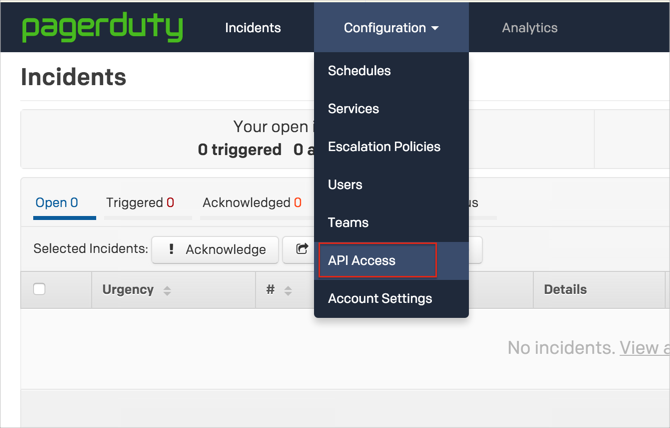
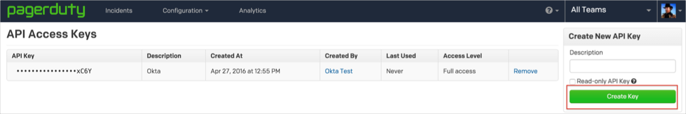
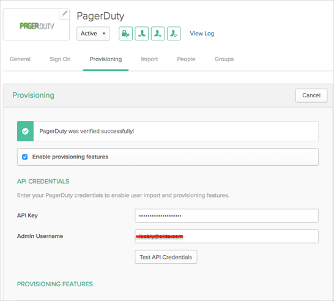
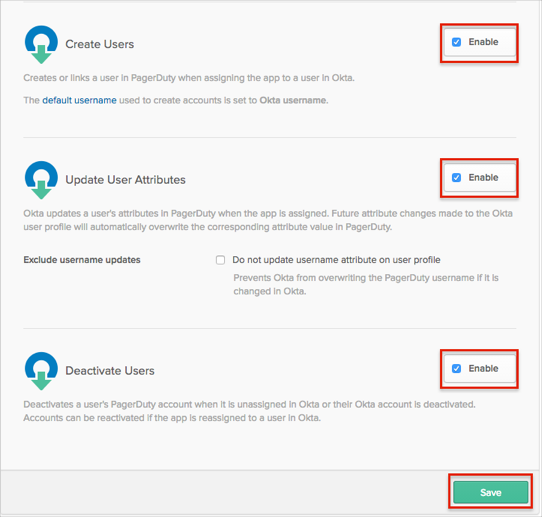
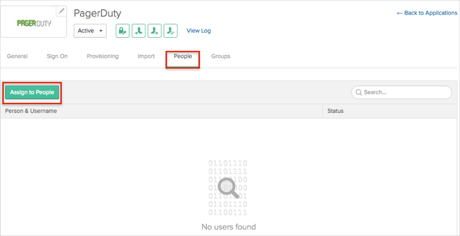
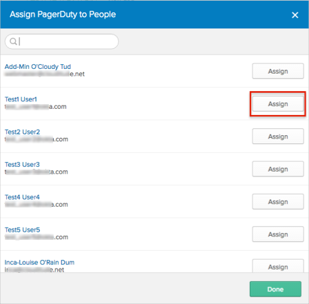
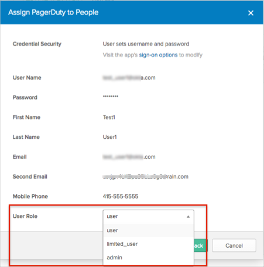

This article is a Work In Progress
This guide provides the steps required to configure Provisioning for PagerDuty and includes the following sections:
Push New Users
New users created through OKTA will also be created in the third party application.
Push User Deactivation
Deactivating the user or disabling the user's access to the application through OKTA will deactivate the user in the third party application.
Push Profile Updates
Updates made to the user's profile through OKTA will be pushed to the third party application.
Import New Users
New users created in the third party application will be downloaded and turned in to new AppUser objects, for matching against existing OKTA users.
You need to complete the following before you can configure provisioning for PagerDuty:
Generate a new API key from PagerDuty:
Login to your PagerDuty account as an Administrator.
Select API Access from the Configuration menu:

Click the Create Key button:

Configure your Provisioning settings for PagerDuty as follows:
Check the Enable provisioning features box.
Enter your PagerDuty API Credentials:
API Key: Enter an administrator password.
Admin Username: Enter an admin username with admin or owner permissions.

Scroll down and enable the Provisioning Features you want to use for this app:

Click Save.
You can now assign people to the app, if needed (see below).
To assign users to the PagerDuty app:



PagerDuty does not support User's Schema Discovery.